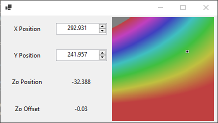
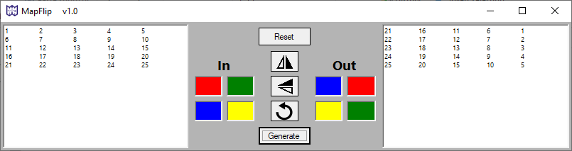
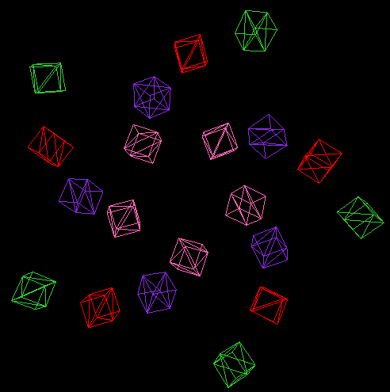
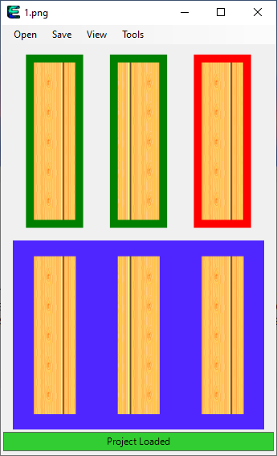

C# Bilinear Interpolation
Mar 11, 2020
Finally figured out how to do this in C#. It is really just algebra. I also pulled together some code and made a cool interactive PictureBox heatplot.
Python Time
Mar 8, 2020
When you need numpy, you need numpy.
Same goes for Scipy.
While you're at it... why not matplotlib?
I've made similar scripts in .NET for creating 2D interpolation tables
and python just makes it so much easier.
I needed to create a 5mm x 5mm table spanning 800mm x 500mm from a small handful of points.
This image shows some randomly generated test data. There are 3 modes in griddata, and 'linear' was the obvious choice.
'Cubic' sometimes creates negative values from an all positive dataset and 'nearest' is far to coarse.
Walkin up or down
Sometime in 2003 or 2004
I was a walkin
I was a talkin
I was a fallin into a hole
There was a mole
That looked like coal
No it was just a mole
But it was as black as coal
Oh so I was still a fallin
Callin for help
And Michael Phelps came to save me
Wheeee he swam down to get me
And he a saved me
And the judges gave him a
shiny gold medal while he was
a talkin. I was a tryin to rhyme.
A year of .NET
Mar 2, 2020
I think I actually write good code now. VB was a great way to grow from tiny, single file apps made in nano over SSH on a rPi into a real software developer. I have a huge folder of projects that show how crappy I was a year ago and how many tips and tricks I have learned since. I am now combining the useful ones into a software suite using C#, F# and VB and it is very satisfying. As for OpenTK and LÖVE... I am going to try and simplify things with the SVG NuGet package. If it isn't easy or necessary, the customer won't use it, and it is wasted time. I think a simple, detailed SVG will go a long way. Oh yeah, Entroptik (terrible name still) has an AutoTrain now... basically cheap ML - but I made it! I'll leave you with a simple script that helped me set up the GridWizard part of Entroptik (another new feature). I don't think this is "good" code, but it works.
 Black & White = Entropy of 1, great for testing!
Black & White = Entropy of 1, great for testing!
Abandon OpenTK... Back to LÖVE
Feb 24, 2020
I got a demo up and running with C# and OpenTK. It was not very good and took up a lot of memory. LÖVE is much nicer and saves me a lot of time and computers seem to like it too! I downloaded VS Code so that I could use a Lua/Love2d extension and it is a wayyyyy better way to develop in than what I was doing before. Here is what I managed to get together after a Refresher Tutorial. (The blocks dissapear upon mouse click - not a performance issue, haha)

Actually Understanding OpenTK
Feb 20, 2020
It is easy to copy a tutorial and feel satisfied. I had to follow at least 5 tutorials until I was able to do it on my own. Maybe I should have just read the book like they all did while making the tutorials. Oh well, I have moving rectangles! And I did it myself! I don't need a Z dimension for this project, so making rectangles saves precious RAM.
MapFlip
Feb 18, 2020
If you are savvy with Python Pandas or know what a for loop is, then rotating and flipping arrays is small potatoes. But, if your data never sees the world outside the cells of a Excel file, you might need a VBA extension... or the carnival-esque MapFlip!
Entroptik v2.0 and OpenGL
Feb 17, 2020
I completed Entroptik v2.0 and it works the same way, but teaching the feature locations has changed. I have also started using OpenTK for visualizations. Very cool! Big thanks to Dreamstate Coding for the tutorials.
Entroptik
Jan 19, 2020
Finished up a redo of an old project. I am not too fond of the name, but it works as designed. Everything is availble in the GitHub repo. You take a folder of images and parse them into an output log that tells you if certain features were present or absent. It is designed of quality control type work with AOI type machines. The advantage here is that the program is "dumb" and this runs very fast and doesn't need any licenses because it uses literally only one call to MathNet.Numerics. Enjoy!
New Desktop
Jan 4, 2020
Just set up a new desktop for work/home use. Best way to install Lua on Win10 is described here. Then, install the LuaScript plugin to Notepad++ and add a hotkey to run current script. Also, compiling with love2d is a lot easier than I thought if the Win10 version of love2d is installed. Just have to swap file name if desired. Yes, I have also ventured into powershell scripting and autohotkey. In other words, I have not enabled WSL on this new computer and I am getting more done!
LÖVE Clicky
Dec 31, 2020
I have ventured into the space of Lua and LÖVE. It is an amazing resource for creating 2D games. I think it will be useful for work and personal projects. To start, I recreated my JS Clicky. It is a lot more intuitive and the community is marvelous. This page shows some of the phenomenal work done and you can package everything into HTML and/or JS with this insanely cool tool. I refuse to get involved with Docker at this point in my life, so thank you Bernhard Schelling. Here is a small list of very cool libraries that will make it much easier to take things to the next level. Distibuting to all platforms is very easy and having a small .exe in the end is always my goal. Here, all the game files are in a directory that is zipped into a .love (Just a renamed .zip) file. Run it through love.exe and you have the distributable .exe! Someone made a C# solution of the same name that does this upon file change... so I might switch to that method. I always try to use the best language for the job at hand, and this is without a doubt the best way to make lightweight 2D GUI that relies on mouse input events. Now, what is this about Moonscript??
Javascript Clicky
Dec 25, 2020
Won't work with AdBlocker enabled
This was a huge learning experience. Thanks to Rembound and Kirupa for their tutorials. Overall, I find this frontend stuff pretty nasty... but, it is very useful and easy to deploy projects and ideas. So, I will stick with it and continue to find out how to make HTML CSS and JS play nicely together.
About Me
818 322 5090
Gmail:
bradmartin333
I am starting to document my projects here to learn more about web design. It is hard to find the line between my occupation and my hobbies, so I am always learning and having fun.